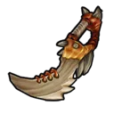

Adaga de Drakalos
Adaga · Tier 15 · Nível 45
É leve o suficiente para usar junto com um escudo!
Atributos
Ataque
1.260
Crítico
10%
Economia
Valor
24.550.000
Tempo de fabricação
2d 21h
XP do comerciante
255.000
Trabalhadores: Ferreiro 38, Joalheiro 34, Mestre 31
Receita


Marcos do projeto
4
Tempo de fabricação -25%
10
Valor +25%
18
-2 Garra Interdimensional
25
-109 Ferro
40
Chance de qualidade +1